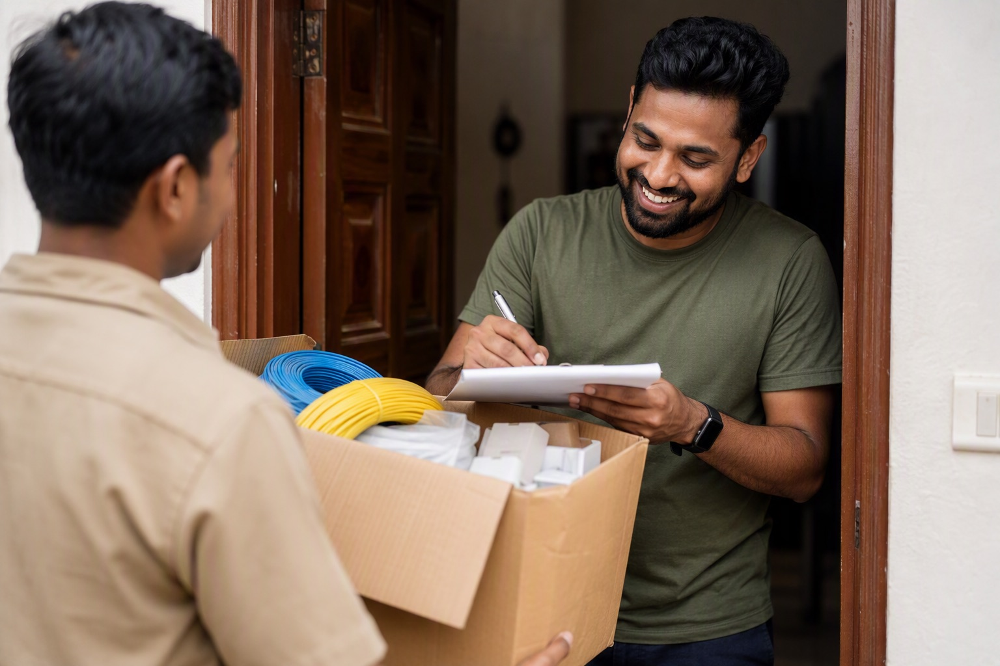

The 12-Point Checklist Before You Pay for Finolex Wire

Run these twelve checks at your own site, before payment and before installation. Together they take about fifteen minutes on a house delivery and they close every route by which duplicate wire reaches a wall. The order matters — each step is arranged to catch problems before you have invested more effort.
Before the delivery arrives
1. Buy in your own name
Order the wire and switchgear yourself with your own invoice rather than on a with-material contract. This single decision removes the substitution incentive entirely — the reasoning is in how duplicate wire reaches your home.
2. Confirm the seller is authorised
Ask for the Finolex dealer certificate and check the name on it matches the billing entity. See asking for the certificate.
3. Get a reference price
Have an independent quote in hand so you know the honest band before anyone quotes you. Ours takes 60 minutes on WhatsApp and carries no obligation.
4. Insist on pay on delivery
Every check below requires the material to be in front of you and the money still in your pocket.
When the delivery arrives
5. Check the factory seals
Every carton sealed and original. Re-taped or resealed boxes are set aside immediately, before anything else is checked.
6. Inspect the carton printing
Sharp, correctly registered print. Size in sq mm, grade, coil length, batch number and voltage rating all present and printed as part of the label — not on a pasted sticker.
7. Scan the outer QR on every carton
Confirm the link belongs to Finolex's own domain, the reported product matches the box, and the scan history is reasonable. Full detail in the outer QR guide; if a code will not read, see non-scanning codes; if it reports prior scans, see already-scanned codes.
8. Open and scan the inner QR on a random sample
At least a quarter of the cartons, picked at random rather than off the top of the stack. This is the check that catches refilled cartons and the one most buyers skip — the inner QR guide explains why it matters most.
On the wire itself
9. Read the insulation markings
Unroll a full metre. Even spacing, crisp characters, consistent colour, no missing stretches, brand and size correct. See reading the markings.
10. Inspect the copper
Cut about fifty millimetres and look at the conductor end. Strand count, strand thickness, uniform bright colour. This is where a duplicate's saving actually lives.
11. Sanity-check length and weight
Where the wire carries sequential metre marking, compare the outer and inner ends. A coil noticeably light for its size and marking is worth questioning.
Before you pay
12. Check the invoice line by line
Your own name, GST details, and every item listed by brand, size, grade and quantity — 4.0 sq mm should appear if your house has air conditioners and a geyser. A vague invoice makes a warranty claim very difficult and makes it impossible to prove later what you were supplied.
The whole thing on one page
| # | Check | Fail action |
|---|---|---|
| 1 | Bought in your own name | Change the contract terms before ordering |
| 2 | Seller authorised for the brand | Buy elsewhere |
| 3 | Reference price in hand | Get one before committing |
| 4 | Pay on delivery agreed | Do not pay in advance |
| 5 | Factory seals intact | Set carton aside, do not pay for it |
| 6 | Carton printing sharp, no stickers | Reject the carton |
| 7 | Outer QR verifies and matches | Replacement carton, rescan |
| 8 | Inner QR verifies on sample | Reject the delivery, keep evidence |
| 9 | Insulation markings consistent | Stop installation, photograph, escalate |
| 10 | Copper full specification | Reject, keep sample as evidence |
| 11 | Length and weight plausible | Question before accepting |
| 12 | Invoice complete and in your name | Do not pay until corrected |
If something fails, the complaint guide covers what to do next.
Buying Finolex in Bangalore? Mount Cable India is one of the largest distributors of Finolex cables in the country. WhatsApp your list to 88676 76700 for an exact quote within 60 minutes — free next-day delivery, pay on delivery, and you scan and verify every box at your site before any money changes hands.
Frequently asked questions
What should I check before paying for Finolex wire?
How long does verifying a wire delivery take?
How many boxes should I open to check the inner code?
What should a Finolex invoice contain?
Why does buying in my own name matter?
What do I do if one carton fails a check?
Ready to order for your home?
Upload your wiring list for an instant quote — 100% original material, free next-day delivery across Bangalore.